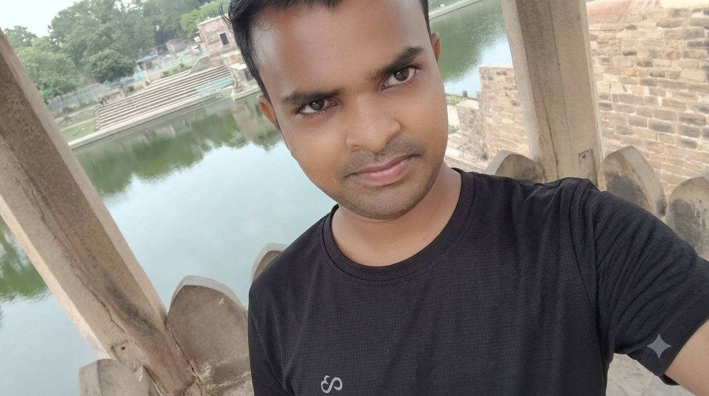

01 — EDUCATION
शिक्षा और प्रतियोगी परीक्षाएँ
BPSC, बिहार की प्रतियोगी परीक्षाएँ, सामान्य अध्ययन, रिवीजन और प्रश्न-अभ्यास।
मुझे सीखना, नए विचारों पर काम करना और ज्ञान को आसान व उपयोगी रूप में साझा करना पसंद है। मेरी रुचियाँ प्रतियोगी परीक्षाओं, शिक्षा, AI टूल्स और डिजिटल कंटेंट क्रिएशन से जुड़ी हैं।

मेरा नाम सानोज कुमार है। मैं ज्ञान, सीखने और डिजिटल क्रिएटिविटी को अपनी यात्रा का महत्वपूर्ण हिस्सा मानता हूँ।
मेरी पढ़ाई और रुचियों में राजनीति विज्ञान, भारतीय इतिहास, अर्थशास्त्र और प्रतियोगी परीक्षाओं की तैयारी शामिल है। मैं विशेष रूप से BPSC और बिहार की अन्य प्रतियोगी परीक्षाओं के लिए विषयों को सरल, व्यवस्थित और परीक्षा-उपयोगी तरीके से समझने पर ध्यान देता हूँ।
इसके साथ ही, मुझे AI टूल्स, वीडियो निर्माण, डिजिटल डिज़ाइन और ऑनलाइन कंटेंट के नए तरीकों को सीखना पसंद है। मेरा उद्देश्य लगातार अपनी जानकारी और कौशल को बेहतर बनाना है।
BPSC, बिहार की प्रतियोगी परीक्षाएँ, सामान्य अध्ययन, रिवीजन और प्रश्न-अभ्यास।
भारतीय इतिहास, राजनीति विज्ञान, अर्थशास्त्र और समसामयिक विषयों को समझना।
AI टूल्स, वीडियो आइडिया, डिजिटल डिज़ाइन और ऑनलाइन कंटेंट बनाने के तरीके।